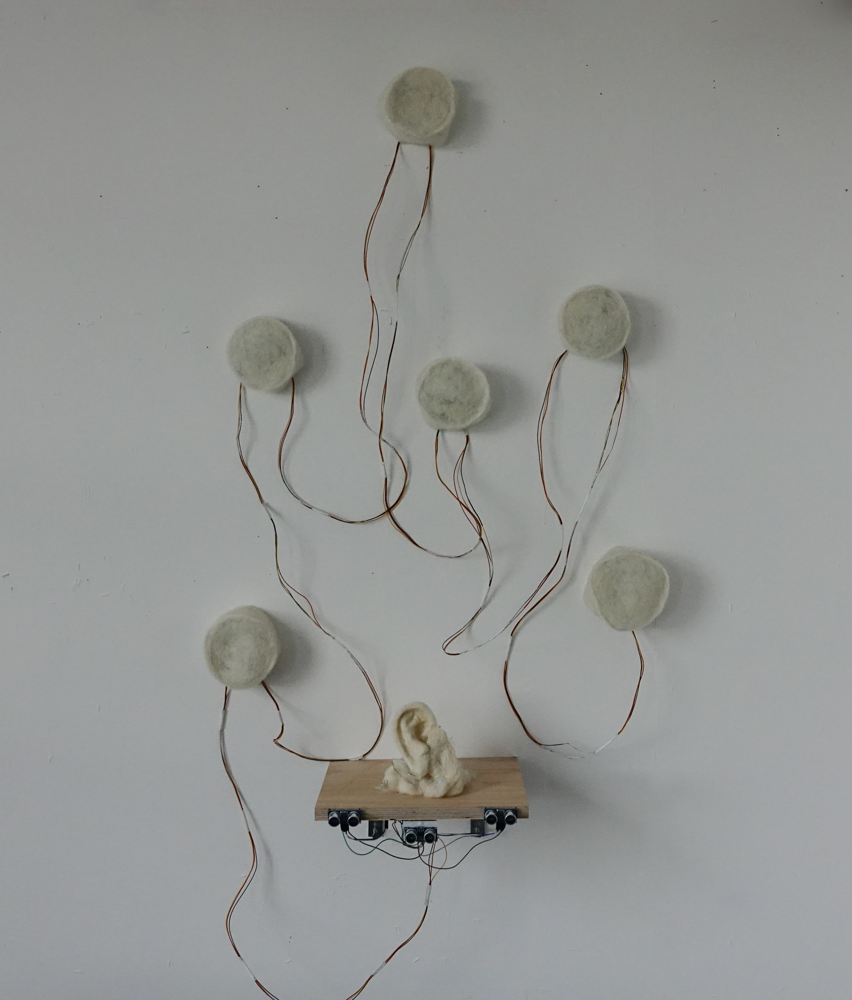

Close Up A Bit
也许人与人的遇见真的会产生某种磁场, 不然如何解释我靠近你时产生的兴奋与慌张? 贫乏无知的我只能用生物学的角度来解释与探索。
Perhaps there is a certain magnetic force that arises when people interact. How else could I explain the mix of excitement and anxiety that I feel whenever I get close to you? As someone who lacks wealth and knowledge, I can only attempt to understand and explore it through a biological lens.
在这里同我交流, 不用言语, 只需要靠近一点。
Communicate with me here without words, just get closer.
10.2023.
felt, 6 NeoPixeL Rings, electric wires, acrylic on PVC sheets, Arduino Uno, 3 ultrasonic distance sensors, glass, power bank, wood board
size: 33x45x25 cm^3